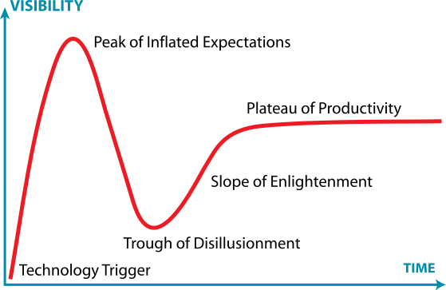

17 Technology Adoption
17.1 Gartner Hype Cycle
Wikipedia

The Gartner hype cycle is a graphical presentation developed, used and branded by the American research, advisory and information technology firm Gartner to represent the maturity, adoption, and social application of specific technologies. The hype cycle claims to provide a graphical and conceptual presentation of the maturity of emerging technologies through five phases.
Hype (in the more general media sense of the term “hype”[3]) plays a large part in the adoption of new media. Analyses of the Internet in the 1990s featured large amounts of hype and that created “debunking” responses. A longer-term historical perspective on such cycles can be found in the research of the economist Carlota Perez. Desmond Roger Laurence, in the field of clinical pharmacology, described a similar process in drug development in the seventies.

There have been numerous criticisms of the hype cycle, prominent among which are that it is not a cycle, that the outcome does not depend on the nature of the technology itself, that it is not scientific in nature, and that it does not reflect changes over time in the speed at which technology develops. Another is that it is limited in its application, as it prioritizes economic considerations in decision-making processes. It seems to assume that a business’ performance is tied to the hype cycle, whereas this may actually have more to do with the way a company devises its branding strategy. A related criticism is that the “cycle” has no real benefits to the development or marketing of new technologies and merely comments on pre-existing trends. Specific disadvantages when compared to, for example, technology readiness level are:
The cycle is not scientific in nature, and there is no data or analysis that would justify the cycle.
With the (subjective) terms disillusionment, enlightenment and expectations it cannot be described objectively or clearly where technology now really is.
The terms are misleading in the sense that one gets the wrong idea what they can use a technology for. The user does not want to be disappointed, so should they stay away from technology in the Trough of Disillusionment?
No action perspective is offered to move technology to a next phase.
This appears to be a very simplified impulse response of an elastic system representable by a differential equation. Perhaps more telling would be to formulate a system model with solutions conforming to observable behavior.
An analysis of Gartner Hype Cycles since 2000[11] shows that few technologies actually travel through an identifiable hype cycle, and that in practice most of the important technologies adopted since 2000 were not identified early in their adoption cycles.